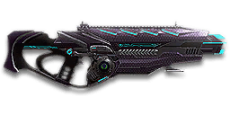

← Back to the Thanatos VE70 comparison
Sage Guide · Vanu Sovereignty · Shotgun
The free VS starter shotgun. Eight shells, a 2.1-second reload, and a two-pull kill at any range — if all six pellets land. This page teaches you to win fights with it today. auto-granted — the free VS starter shotgun.
The one-line verdict: a free starter shotgun that kills in two pulls at any range — on paper. In real fights the pellets spread, so it rewards getting close, aiming at centre mass, and pulling the trigger exactly when the gun is ready.

The Thanatos VE70 · Vanu Sovereignty · 8-shell magazine
Picture the scene, because you've probably lived it: you're sprinting across a courtyard, an enemy appears, and you do everything at once — pull the trigger while you're still running, then press aim-down-sights (ADS) a split-second later, finger still working. The sight picture snaps in, it looks precise… and your pellets go everywhere except the man in your crosshair. He kills you. It feels like the game cheated. It didn't — here's what actually happened.
You started firing from a sprint, from the hip. Sprinting is the least accurate state in the game: your cone of fire starts at 7.0° — fully maxed, the widest it can ever be. Every pull you fire from the hip sends its whole 3° pellet pattern out of that cone, centred wherever the sprint is pointing.
Then you keep pulling the trigger — and every pull is a fresh pattern. A semi-auto shotgun fires once per click, as fast as 267 ms apart. Firing from the hip while running means each pattern's centre lands wherever the sprint cone points — and pressing ADS mid-stream does not call any of it back. The sight looks precise; the pellets went where the moving gun was pointing, not where the dot is now.
Two timers stack the deck further: your gun needs about 0.3 s to settle after a sprint, and raising the sight itself takes ~0.15 s. Pulling the trigger through all of it means your first half-second of fire is pure confetti — and with only 8 shells in the magazine, you cannot afford confetti.
1 · Feet. Let go of sprint (and the trigger, if you're already working it). Stop, or drop into a strafe — anything but a full sprint.
2 · Sight. Press ADS and let the sight come up. This takes a heartbeat — about 0.15 s.
3 · Trigger — one deliberate pull at a time. Now fire, one pull per click, about 267 ms apart, re-aiming between pulls. Starting with the sight settled, the first pattern lands where the dot points — and because the spread never grows, every pull is as accurate as the first, as long as your aim is.
Stop → aim → fire. If you take one habit from this entire page, take this one. You'll practise exactly this rhythm in the trigger drill in section 04.
Four beats, left to right — the same mistake the cards above describe, drawn out.
1 · SprintingYour cone starts maxed at 7.0° — the widest it can ever be.
2 · Trigger heldFiring from the hip while running — every shot adds bloom.
3 · ADS, mid-holdThe sight looks precise — but aiming down sights does not reset bloom.
4 · The sprayBullets fly out of the wide cone you built. The enemy walks away.
Same fight, done right. Each beat has a job, and the order is the whole lesson.
1 · StopLet go of sprint (and the trigger). About 0.3 s for the gun to settle.
2 · AimPress ADS and let the sight come up (~0.15 s).
3 · FireNow fire — from the aimed cone. First shots land where the dot points.
The exception — under ~8 m, skip the whole danceHipfire works, no ADS needed, and stopping is optional. Keep moving, strafe, and let the hipfire ring do the work.
Every enemy infantry has 1,000 health (500 shield + 500 health). Your pull fires 6 pellets of 100 damage each — 600 damage per pull up close, fading to 84 per pellet (504 per pull) at long range. Headshots count 1.5× per pellet, leg shots count less (×0.9). Shots to kill here means trigger pulls — never single pellets. That gives you three numbers worth memorising:
| Range | Damage / pull | Head | Chest | Legs | Chest vs shielded Heavy |
|---|---|---|---|---|---|
| Close · 0–5 m | 6×100 = 600 | 2 | 2 | 2 | 3 |
| Mid · 5–20 m | 600→504 | 2 | 2 | 2→3 | 3 |
| Far · 20 m+ | 6×84 = 504 | 2 | 2 | 3 | 3 |
Perfect-accuracy times to kill: 2 headshot pulls ≈ 0.27 s, 2 chest pulls ≈ 0.27 s — at every range, because 6 × 84 is still 504 damage per pull past 20 m. Perfect accuracy, the magazine holds 4 kills. In real fights you will land maybe two-thirds of your pellets — so count on 3 pulls, not 2, and keep the third pull in the tube.
Mid-band pulls are a range, not a single number: the table shows the pulls at the near end of the band → the pulls at the far end. The wiki's sampled damage values match the Census linear falloff the lab uses to within rounding, so the lab's pulls agree with the wiki's tables.
Full power to 5 m, then a steady slide to 84 per pellet at 20 m. The gold line shows Flechette Ammunition, which stretches full power to 15 m — at the cost of one pellet per pull (section 06).
| Shotgun | Close TTK (2 pulls) | vs yours | Far TTK | vs yours |
|---|---|---|---|---|
| NC12 Sweeper | 267 ms | — | 534 ms | +100% |
| TS4 Haymaker | 267 ms | — | 534 ms | +100% |
| Thanatos VE70 (this gun) | 267 ms | — | 267 ms | — |
| NS Baron G5 | 300 ms | +12% | 600 ms | +125% |
| SG-100 | 280 ms | +5% | 560 ms | +110% |
| NS Viscount G6 | 315 ms | +18% | 630 ms | +136% |
Close TTK is two pulls (one refire interval); far TTK is three pulls (two intervals) — except the Thanatos, which still kills in two pulls at range, so its far TTK is one interval. Percentages are (other − yours) ÷ yours; negative means faster than your gun.
One gun, four fighting styles. The right technique changes with distance — use the range finder below to see what your pellets do at any range, then learn the four bands underneath it. The lab counts trigger pulls, not pellets: one pull is 6 pellets, and the kill is two pulls if they all land.
How to fight hereAim down sights at the centre of the chest. Pull once, re-aim, pull again — two pulls kill if the pellets land.
Aim: centre of the chest, from the hip. Keep moving.
Scoping in costs you time and slows you to 0.75× speed — at arm's length that gets you killed. The Thanatos VE70 puts all 6 pellets inside a 0.26 m circle at 5 m, so the hipfire pattern already covers a torso. Strafe side to side (A/D) while pulling the trigger so you're hard to track.
Aim: centre of the chest. One pull per 267 ms, re-aim between pulls.
This is where the gun earns its keep: full 100 damage to 5 m, and a two-pull kill that holds at every range as long as the pellets land — even past 20 m, where 6 × 84 is still 504 per pull. Aim at the centre of the chest and pull once per 267 ms, re-aiming between pulls.
Aim: centre of the chest. Two pulls on paper, three in practice.
At 20 m the pattern is already 1.05 m wide — wider than the man you're shooting at — so half your pellets miss a torso and the paper two-pull kill becomes three pulls in practice. Take these shots only at stationary or fleeing targets. Otherwise, close the distance behind cover, or fit Flechette or Slug Ammunition (section 06) and treat it as a different gun.
Aim: centre of the chest. Three pulls, if they all land.
At 20 m and beyond you are at minimum damage and the pattern is over a metre wide — most of your pellets miss a torso entirely. Take these shots only at stationary or fleeing targets. Otherwise, your better play is to close the distance behind cover. Knowing when not to shoot is a skill too.
Your accuracy is decided by two things before skill even enters it: what your body is doing (your stance sets the starting cone of fire) and what your finger is doing (on a semi-auto shotgun, your finger sets the pace — one pull per click, and the gun will not fire faster than its 267 ms refire). The Thanatos VE70 has no fire-mode switch — semi-auto only — so "firing modes" are something you do with your finger, not a setting on the gun.
Two numbers add up to where your pellets go: the pellet spread (3° hip, 3° aimed) and the cone of fire below. Pellet coverage = spread + cone. A rifle's cone blooms with every shot; a shotgun's does not — there is no bloom at all, so the cone you start with is the cone you keep.
| Stance | Starting cone | What it means for you |
|---|---|---|
| Sprinting | 7.0° | Maxed out — the widest the cone can be. This is the section 01 disaster: never start firing from a sprint. |
| Hipfire, moving | 2.0° | Walking or strafing from the hip. The pattern's centre wanders — at 8 m the full coverage is already 0.70 m wide (3.0° spread + 2.0° cone), wider than a torso. |
| Hipfire, standing | 1.5° | Your point-blank default. The 0.42 m spread ring at 8 m in section 05 is this stance drawn out — the cone adds 1.5° on top, so the full coverage is 0.63 m (4.5°). |
| Hipfire, crouched | 1.0° | The tightest hipfire you have (1.5° if you crouch-walk). Crouch when holding a doorway from the hip. |
| Aimed (ADS), feet planted | 0.1° | Standing or crouched makes no difference here. The cone is a dot — but the pellet spread is still 3.00°, so ADS centres the pattern, it does not shrink it. Full coverage at 8 m: 0.43 m. |
| Aimed (ADS), strafing | 0.9° | Same tight start, but you move at 0.75× speed — faster on the strafe than an LMG's 0.5×. Strafe between pulls to stay hard to hit; plant your feet during each pull. |
| Mode | How your finger does it | Use it at |
|---|---|---|
| One pull, re-aim — the default | Click once, let the crosshair settle, click again — one pull every 267 ms | Almost everything. This is the whole gun. |
| The 3-pull burst — the Dorf discipline | Three paced pulls, ADS, re-aiming between each — then stop and assess | 20 m fights. At 20 m a 3-pull ADS burst with Smart-Choke + Flechette + Ext Mag kills in one mag 99% of the time (Dorf EP03). |
| The mag dump — mashing | Clicking as fast as you can, over and over | Nowhere. The gun cannot fire faster than its 267 ms refire — extra clicks do nothing, and a wandering aim wastes the magazine. |
| Slug — one big bullet | ADS, aim at the head, single deliberate pulls — only with Slug Ammunition fitted | 20–40 m with Slug Ammunition (section 06). One 450-damage slug, no spread — a different gun. The SG-100's EP12 ADS setup lives here. |
A target 20 m away, aiming down sights. Click PULL THE TRIGGER (mouse, touch, or Space with the button focused) — one click is one pull, and the gun only fires if at least 267 ms have passed since the last pull. Click too early and nothing happens: that click is counted as "too early" and the button flashes red. The green bar under the buttons is the gun getting ready — pull again when it is full, and within about 250 ms after it fills: dawdling between pulls is a miss of its own kind. Every three pulls is one group; all three landing at least half their pellets, on the beat, is a kill. This practice window replaces the auto-rifle burst simulator from the rest of the series: a semi-auto shotgun has no 5-round burst rhythm to practise, so the drill is paced pulls at the gun's own refire, re-aiming between pulls. Pellets are drawn at true scale from this gun's numbers (6 pellets, 3° spread, target at 20 m).
Gun ready — the bar fills over 267 ms after each pull. Green means ready.
Your 3-pull groups will be graded here — three landed pulls, on the beat, is a kill.
Some things are easier to show than to say. Here's what your pellets actually do: how wide the pattern is at 8 metres, what a good trigger rhythm looks like, and what the 2x sight really changes. The hands-on version — pulling the trigger yourself, on the beat — is the practice window in section 04.
A full-size target 8 m away — an arm's-length room fight. The rings show where your pellets land around your aim point (the chest). Sizes are drawn to scale from the gun's real pellet-spread numbers.
Read it this way: standing still, the 0.42 m ring roughly covers the chest — most pellets hit a target this size, which is why hipfire works point-blank. But move and it grows to 0.70 m — wider than the torso — so the edge pellets start leaking past him. Aim down sights and the ring does not shrink: ADS on this gun is the same 3.00° spread, and the green dot is only the 0.1° cone of fire. ADS centres the pattern, it does not tighten it — only the Smart-Choke does that (0.25 m). The rings only grow with distance while the man doesn't. Past ~10 m that's pellets missing entirely: the exact moment to stop hipfiring and start re-aiming between pulls. (Ring sizes use the real geometry: spread diameter = 2 × distance × tan(spread ÷ 2). The full pellet coverage adds the cone of fire on top — hipfire standing is 0.63 m, not 0.42 m.)
Same 18 pulls, two very different outcomes. Mashing the trigger wastes the magazine; three paced pulls, re-aiming between each, kills:
The target pattern is three pulls, re-aiming between each — that is the ideal. At 20 m a single pellet's hit chance falls from 55% on the first shot to 18% on the last when you spray, so the extra pulls mostly decorate the wall behind your enemy instead of hitting him. Three paced pulls, ADS, with Smart-Choke + Flechette + Extended Mag kills in one mag 99% of the time — against a 46% chance to not kill before the reload when spraying with MPL + Flechette (Dorf EP03). Short groups also leave you shells for the second enemy — remember, the magazine is only 8.
No zoom. The target at 20 m is small but the view is wide open — you see the crate, the tower, and the next enemy coming. Fast to aim, nothing blocks your edges. Best inside ~25 m.
Same target, same 20 m — but he looks twice as tall, so placing the pattern's centre on his chest gets much easier. The price: your view narrows to the round window, the crate and tower are gone, and close targets feel fast and huge. Best at 15–30 m.
That's the whole sight decision from section 06 in one picture: 1x for awareness, magnified for precision. Most veterans carry both and swap per base — indoors 1x, open ground magnified. On a shotgun the sight matters less than on a rifle: it centres the pattern, it never shrinks it.
Good news: the most important thing on this gun — the trigger discipline in section 04 — costs nothing. Everything below is an optional sidegrade, not an upgrade. Buy in the order shown and stop whenever the gun feels right.
The default open sights. Honest, unobstructed, and free — and on a shotgun the sight only centres the pattern, so irons lose you very little.
Good: your first weeks. Spend certs on your suit and shield first.
Bad: nothing — there's no downside to an empty slot.
A clean red-dot sight with no zoom. Your default upgrade, and honestly your best all-round option.
Good: everywhere indoors and out to ~25 m — which is most shotgun fights.
Bad: picking out targets past 30 m; that's what the magnified sight is for.
Doubles your view magnification. Costs almost nothing — the price of one kill or two.
Good: open-field bases and your 15–30 m paced-pull game. Swap between 1x and 2x per fight.
Bad: tight indoor rooms — the zoom makes close targets feel fast and huge.
Night-vision sight: enemies glow white against a dark view, and it sees through smoke.
Good: night fights, smoky doorways, spotting infiltrators by their outline.
Bad: daytime and long range — its view is short-ranged and washes out in bright light.
VMS / V3 Holo / OG-4 / CSZ (3.4x & 4x) — sniper-style magnification on a shotgun.
Good: almost nothing a beginner does — recoil magnifies too, and tunnels your vision.
Bad: any fight inside 30 m, which is where you'll spend your first hundred hours.
Shotguns take exactly one barrel attachment (below), and plenty of veterans run this slot empty forever — the choke trades hipfire spread for aimed spread, and if you mostly hipfire, that trade loses.
Good: your first weeks, and any hipfire-heavy build. Spend certs on your suit and shield first.
Bad: nothing — there's no downside to an empty slot.
Tightens your pellet spread by 40% while aiming down sights (3° → 1.8°) — but widens it by 20% from the hip (3° → 3.6°). The single biggest accuracy upgrade a shotgun can buy.
Good: aimed 15–30 m fights and the 3-pull burst discipline — it is half of the EP03 one-mag kill combo.
Bad: pure hipfire builds — it makes your hipfire pattern wider, not tighter.
There is no compensator, suppressor, heavy barrel or short barrel for shotguns. The wiki's attachment tables list only the Smart-Choke in this slot, and the Compensator's own availability page lists no shotguns in any faction.
Nothing fitted. Fine while you learn the gun — the rail is the last slot to fill, not the first.
Good: your first weeks. The choke and the sight matter more.
Bad: nothing meaningful.
Weapon swap is 30% faster, horizontal recoil falls 20%, vertical recoil rises 20%. The aimed-shooting grip.
Good: the aimed, mid-range game — and swapping to your sidearm when the tube runs dry.
Bad: hipfire builds — it does nothing for the hip, and the extra vertical kick shows on the second pull.
Reveals cloaked infiltrators in a cone in front of you. It also announces exactly where you are.
Good: hunting infiltrators around a point, and night fights in tight buildings.
Bad: open play — the light is a beacon, and you are a shotgun: you want to be close before they see you.
+2 shells in the magazine (8 → 10). Costs you: equip and unequip are 15% slower.
Good: the 3-pull burst discipline — two more shells is most of another kill per magazine.
Bad: a pure point-hold build where you swap weapons constantly — the slower swap shows.
Cuts vertical and horizontal recoil by 60% when fired from the hip. This is the shotgun's laser — but read it carefully: it cuts recoil, it does not tighten your hipfire cone the way a Laser Sight does on a rifle.
Good: indoor point-holds and stairwell fights where you hipfire inside 8 m.
Bad: open bases — you give up the Comfort Grip's aimed control for a bonus you rarely use.
6 pellets per pull, 100 damage each up close. The honest default — every number in section 02 is this ammo.
Good: learning the gun, and every close fight. Nothing to unlearn later.
Bad: nothing — it is the baseline everything else is measured against.
Triples your full-damage range (5 m → 15 m) and stretches the falloff to 60 m — but costs one pellet per pull (6 → 5). Two pulls still kill to 15 m. Skip it — the standard load already kills in two pulls at every range, and flechette's lost pellet turns that into three pulls past 15 m. Buy the choke instead.
Good: stretching your two-pull kill out to range, and the EP03 one-mag kill combo (with Smart-Choke + Ext Mag).
Bad: close fights — up close it is the same two pulls for one fewer pellet, and on the Thanatos it is strictly worse.
One 450-damage slug per pull, falling to 300 at the weapon's minimum damage range. No spread at all — a headshot is 675 damage. Turns the shotgun into a slow battle rifle: 2 pulls to the chest, 2 to the head at range.
Good: 20–40 m shots at exposed targets, and the SG-100's EP12 ADS setup (slugs + Comfort Grip + Smart-Choke, aim for the head).
Bad: close fights — you give up the whole pellet pattern for one slug, and a miss is a whole pull wasted.
0 certs · Day one
What the game hands you. Genuinely good — learn the gun on this before spending anything.
330 certs · Recommended
The best value in this whole guide. Covers every fight from a doorway to a tower courtyard. No flechette — the standard load already kills in two pulls at every range.
230 certs · Indoor brawler
Built to hipfire down stairwells and hold a capture point room. Swap back to the All-Rounder outdoors.
330 certs · 20–40 m
ADS, aim at the head, one slug at a time. A different gun past 20 m — and the only way this shotgun reaches 40 m.
Headshots deal 1.5× per pellet, but a chest is a bigger target than a head, and two chest pulls kill at every range anyway. So aim at the centre of the chest and let the whole pattern land. Chasing headshots with a shotgun is how you land three pellets instead of 6.
Every pull is a whole pattern — a pull fired at a wall is 600 damage thrown away. Wait the 267 ms, let the crosshair settle on the chest, then pull. The trigger-cadence window in section 04 trains exactly this: too-early clicks do nothing, so the only fast pull is a pull that lands.
Three paced pulls, ADS, re-aiming between each — then stop and look. Three landed pulls kill anything that isn't a shielded Heavy, and the pause tells you whether he's dead, wounded, or never there. Emptying the tube on one target is how you meet his friend with an empty gun.
Reloading with even 1 shell left takes 2.1 s; an empty gun takes 3.2 s — an eternity mid-fight. Count roughly: after two kills, duck behind cover and reload early. Treat the last 2 shells as your emergency reserve, not your working magazine.
Walk with your crosshair at chest height, pointed where an enemy's chest will appear — a doorway edge, a corner, stairs. Most beginners lose fights in the half-second spent dragging the crosshair onto target. While firing, tap A/D to strafe: a moving target is dramatically harder to headshot back, and at 8 m your hipfire pattern still covers his torso.
Your damage, pattern and reload all shine at close range. Sprint between cover, use buildings and rocks as stepping stones, and arrive at your range before opening fire. The player who chooses the range usually wins the duel — make it you.
Every gun has a price. Here's where the Thanatos VE70 pays — and the habit that covers each hole.
Past 20 m the pattern is over a metre wide — the damage is still a two-pull kill, but only if every pellet lands, and at 20 m half of them don't. The gun's paper range and its real range are different numbers.
Play around it: close the distance, or fit the Smart-Choke and treat 20 m as your ceiling.
Two pulls kill only if all 6 pellets land. A pull that lands half its pellets does 300 damage — and the enemy is still shooting. Pellet RNG is not a rounding error, it is the whole fight.
Play around it: get closer. Every metre closer is more pellets on the torso — range is accuracy on a shotgun.
225 RPM sounds fast until you miss the first pull: the second pull arrives 267 ms later, and a missed first pull costs you a third of a second of the enemy shooting back. There is no spray to save you.
Play around it: pull only when the dot is on him (habit 2). The fastest second pull is a first pull that landed.
2.1 s with shells left, 3.2 s on empty — an eternity mid-fight, and there's no extended-magazine option that fixes it except the Extended Magazine itself (+2 shells).
Play around it: reload early and only in cover (habit 4). Your reload is the design, not a failure — plan around it.
Vertical recoil 2.8, horizontal 0.5, a 2.8× first-shot kick — the first pull jumps hardest, and the pattern's centre walks up with every pull. Aiming down sights slows you to 0.75× speed.
Play around it: re-aim between pulls instead of fighting the climb, and hipfire inside 8 m instead of scoping (that's the Point Hold build's whole idea).
Open the world map, travel to VR Training, and run these on the target dummies. Five minutes before a play session beats an hour of dying confused.
Fire at a wall at 8 m, then 15 m, then 20 m. See the ring grow — 0.42 m at 8 m, 1.05 m at 20 m. Repeat with the Smart-Choke: 0.25 m at 8 m ADS. Learn what the pattern looks like before you trust it.
Use the section 04 window first, then live: at 20 m, kill dummies with single pulls exactly 267 ms apart. Count your too-early clicks — zero is the goal. The gun cannot fire faster than its refire, so the only fast pull is a pull that lands.
At 20 m, ADS, kill dummies with groups of three pulls, re-aiming between each. With Smart-Choke + Flechette + Ext Mag, the whole kill should fit in one magazine — 99% of the time, per Dorf EP03.
Pick a dummy, stand 5 m away, and circle it with A/D while hipfiring it down without stopping. This is your point-blank survival skill — the one that fires while your movement does the defending.
Fire exactly 5 shells, step behind a pillar, reload, repeat. Train your hands to reload early and only in cover until it's automatic — in real fights you'll do it without thinking, which is the point.